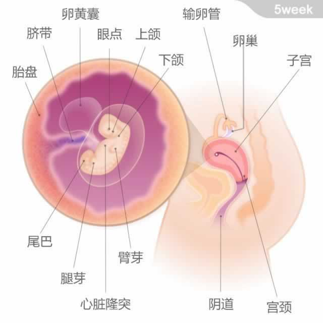
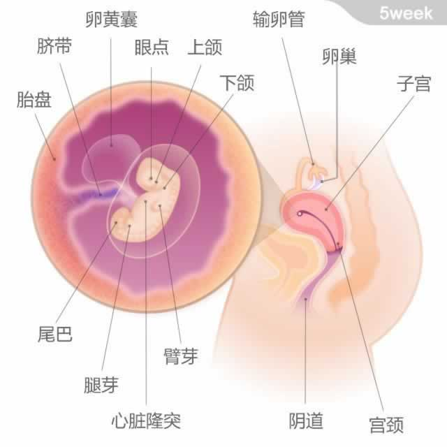

胎宝宝有一粒豌豆大小，从头部到臀部的长度为2～4毫米。本周，胎宝宝看起来有一粒豌豆大小，像一只长着尾巴的小蝌蚪。他的头部开始成形，大大的头上有两个微小的黑点，将来那里会发育成宝宝的眼睛；他的小耳朵也开始发育。胳膊和腿的雏形在此刻已经显现，仿佛凸出的小芽。
此时，连接脑和脊髓的神经管已经闭合，胎宝宝的胃、肝脏、胰腺等重要器官都开始发育，他的血液循环系统也开始工作了！最令人欣喜的是：虽然此时胎宝宝的心脏只有一粒种子大小，但已经可以自主跳动了。

胎宝宝有一粒豌豆大小，从头部到臀部的长度为2～4毫米。此时，连接脑和脊髓的神经管已经闭合，胎宝宝的胃、肝脏、胰腺等重要器官都开始发育，他的血液循环系统也开始工作了！最令人欣喜的是：虽然此时胎宝宝的心脏只有一粒种子大小，但已经可以自主跳动了。